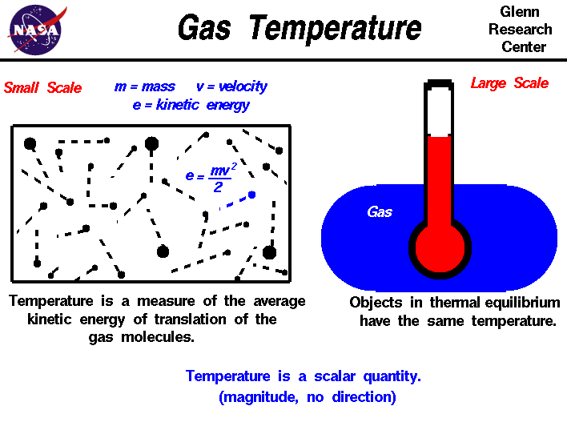

|

An important property of any gas
is temperature. We have some experience with
temperature that we don't have with properties like
viscosity
and compressibility. We've heard the TV meteorologist give the daily
value of the temperature of the
atmosphere
(15 degrees Celsius, for
example). We know that a hot object has a high temperature, and a
cold object has a low temperature. And we know that the temperature
of an object changes when we heat the object or cool it.
Scientists, however, must be more precise than simply describing
an object as "hot" or "cold." An entire branch of physics, called
thermodynamics, is devoted to studying the
temperature of objects and the transfer of heat
between objects of different temperatures. We are including some
fundamentals of thermodynamics in the Beginner's Guide to help you
better understand propulsion. We
are also including an interactive simulator
to let you study how temperature varies with height through the
atmosphere.
There are two ways to look at temperature: (1) the small scale
action of individual air molecules and (2) the large scale action of
the gas as a whole. Starting with the small scale action, from the
kinetic theory of gases, a gas is composed
of a large number of molecules that are very small relative to the
distance between molecules. The molecules are in constant, random
motion and frequently collide with each other and with the walls of
any container. The molecules possess the physical properties of mass,
momentum, and energy. The momentum of a single molecule is the
product of its mass and velocity, while the kinetic energy is one
half the mass times the square of the velocity, as shown on the left
of the above figure. For diatomic gases like oxygen and
nitrogen, in which the molecules are composed of pairs of atoms,
energy can also be stored in the vibration and rotation of the atoms
about each other.
The temperature of a gas is a measure of the average translational
kinetic energy of the molecules.
In a hot gas, the molecules move
faster than in a cold gas; the mass remains the same, but the kinetic
energy, and hence the temperature, is greater because of the increased
velocity of the molecules.
Turning to the large scale, the temperature of a gas is something
that we can determine qualitatively with our senses. We can sense
that one gas is hotter than another gas and therefore has a higher
temperature. But to determine the temperature quantitatively,
to assign a number, we must use some principles from
thermodynamics:
- The first principle is the observation that the temperature of
an object can affect some physical property of the object, such as the
length of a solid, or the gas pressure in a closed vessel, or the
electrical resistance of a wire. You can explore the effects of
temperature on the pressure of a gas at the
animated gas
lab.
- The second principle is the definition of thermodynamic
equilibrium between two objects.
Two objects are in thermodynamic
equilibrium when they have the same temperature.
- And the final principle is the observation that if two objects
of different temperatures are brought into contact with one
another, they will eventually establish a thermodynamic
equilibrium. The word "eventually" is important. Insulating
materials reach equilibrium after a very long time, while
conducting materials reach equilibrium very quickly.
With these three thermodynamic principles, we can construct a
device for measuring temperature, a thermometer, which assigns
a number to the temperature of an object. When the thermometer is
brought into contact with another object, it quickly establishes a
thermodynamic equilibrium. By measuring the thermodynamic effect on
some physical property of the thermometer at some fixed conditions, like the
boiling point and freezing point of water, we can establish a scale
for assigning temperature values.
The number assigned to the temperature depends on what we
pick for the reference condition.
So several different temperature scales have arisen.
The Celsius scale, designated with
a C, uses the freezing point of pure water as the zero point
and the boiling point as 100 degrees with a linear scale
in between these extremes.
The Fahrenheit scale, designated
with an F, is a lot more confusing.
It originally used the freezing point of sea
water as the zero point and the freezing point of pure water as 30 degrees,
which made the
temperature of a healthy person equal to 96 degrees. On this scale,
the boiling point of pure water was 212 degrees.
So Fahrenheit adjusted the scale to make the boiling point of pure water 212
and the freezing point of pure water 32,
which gave 180 degrees between the two reference points.
180 degrees was chosen because it is evenly divisible by 2, 3, 4, 5, and 6.
On the new temperature scale,
the temperature of a healthy person is 98.6 degrees F.
Because there are
100 degrees C and 180 degrees F between the same reference conditions:
1 degree C = 1 degree F * 100 / 180 = 1 degree F * 5 / 9
Since the scales start at different zero points, we can convert from the temperature on the
Fahrenheit scale (TF) to the temperature on the Celsius scale (TC) by using this equation:
TF = 32 + (9 / 5) * TC
Of course, you can have temperatures below the freezing point of water and these are assigned
negative numbers. When scientists began to study the coldest
possible temperature, they determined an absolute zero
at which molecular kinetic energy is a minimum (but not strictly zero!).
They found this value to be at -273.16 degrees C.
Using this point as the new zero point we
can define another temperature scale called the absolute temperature.
If we keep
the size of a single degree to be the same as the Celsius scale, we get a temperature scale
which has been named after Lord Kelvin and designated with a K. Then:
K = C + 273.16
There is a similar absolute temperature corresponding to the Fahrenheit degree.
It is named after
the scientist Rankine and designated with an R.
R = F + 459.69
Absolute temperatures are used in the
equation of state,
the derivation of the state variables
enthalpy, and
entropy, and
determining the
speed of sound.
Temperature, like pressure, is a
scalar quantity.
Temperature has a magnitude, but no direction
associated with it. It has just a single value at every location in a gas. The
value can change from location to location, but there is no direction connected
to
the temperature.
Activities:


Guided Tours
-
 Standard Atmosphere Model:
Standard Atmosphere Model:

-
Gas Statics:
-
Thermodynamics:
Navigation ..


- Beginner's Guide Home Page
|